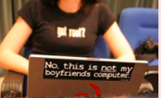

It can be intimidating for women to learn and ask questions when they are in an extreme minority. While open and welcoming, today's budding developing community is up to 91% male. If we can empower more females with the confidence in their technological abilities, we can begin to change this landscape.
